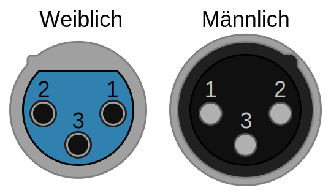

Herzlichen Glückwunsch zu Ihrem neuen drahtlosen DMX-Empfänger! Dieses Gerät ermöglicht es Ihnen, Ihre Nebelmaschine über das professionelle CRMX-Funkprotokoll ("CRMX Wireless DMX") von LumenRadio fernzusteuern.
1. Geräteübersicht
Das Gerät verfügt über ein OLED-Display und ein Steuerkreuz (D-Pad) zur Navigation durch die Menüs.
- gamepad_up / gamepad_down: Ändern von Werten oder Auslösen von Aktionen.
- gamepad_left / gamepad_right: Navigation durch das Menü.
2. Technische Daten & Montage
- Abmessungen (LxBxH): 102 mm x 72 mm x 45 mm
- Gewicht: 220 g
- Stromversorgung: 12V DC (Betrieb), (min. 7V, max. 35V). Intern: L7805CV 5V Regulator.
- Stromverbrauch: ca. 42 mA (bei 12V DC)
- Unterstützte Funkprotokolle: CRMX², CRMX Classic, Wireless Solution G3, G4, G4S, G5 (2.4GHz)
- Kompatibilität: Kompatibel mit allen Geräten, die einen 0-10V Eingang zur Steuerung besitzen und eine Spannungsversorgung von 7-35V bieten.
Hinweis: Beachten Sie unbedingt die
korrekte Pinbelegung, da diese je nach Hersteller variieren kann.
Anschlussbelegung (XLR)
Das Gerät wird über einen 3-poligen XLR-Anschluss verbunden. Die Pinbelegung ist wie folgt:
- Pin 1:
GND / Masse
- Pin 2:
0-10V DC Steuersignal
- Pin 3:
12V DC Versorgungsspannung

Quelle: Wikipedia
ACHTUNG: Eine falsche Verkabelung oder Verpolung kann zu irreparablen Schäden am DMX-Empfänger und/oder an der Nebelmaschine führen! Überprüfen Sie die Verkabelung sorgfältig.
Montage
Auf der Rückseite des Geräts befinden sich zwei Gewindebohrungen (M4) zur Befestigung.
WICHTIGER HINWEIS: Die maximale Einschraubtiefe für die M4-Schrauben beträgt 18 mm. Die Verwendung längerer Schrauben kann zu irreparablen Schäden an der internen Elektronik führen!
3. Erste Schritte
-
Antenne anschließen: Stellen Sie sicher, dass die externe Antenne fest am dafür vorgesehenen Anschluss (IPEX/u.FL) angeschlossen ist. Der Empfang ist für die externe Antenne optimiert.
-
Nebelmaschine verbinden: Schließen Sie das Gerät über den XLR-Stecker an Ihre Akku-Nebelmaschine an. Diese Verbindung versorgt das Gerät mit Strom und stellt die Signalverbindung her.
Wichtig: Überprüfen Sie vor dem Anschließen, ob die Pinbelegung Ihrer Nebelmaschine mit der des Empfängers übereinstimmt. Eine detaillierte Beschreibung der Pinbelegung finden Sie im Abschnitt
Anschlussbelegung.
Nach dem Anschließen startet das Gerät und zeigt den Hauptbildschirm an.
-
Mit Sender verbinden (Linking): Koppeln Sie das Gerät mit Ihrem CRMX-Sender. Eine detaillierte Anleitung finden Sie im Abschnitt "Mit einem Sender verbinden".
-
DMX-Adresse einstellen: Stellen Sie die gewünschte DMX-Startadresse am Gerät ein. Die zuletzt verwendete Adresse wird automatisch geladen. Details dazu finden Sie im Abschnitt "DMX-Adresse einstellen".
4. Das Display
Das Display ist in zwei Bereiche unterteilt: die Statusleiste oben und den Hauptbereich in der Mitte.
Die Statusleiste (oben)
Die Statusleiste zeigt jederzeit die wichtigsten Informationen an:
| Anzeige links |
Bedeutung |
not paired |
Das Gerät ist mit keinem Sender verbunden (gelinkt). |
No Link |
Das Gerät ist gelinkt, sucht aber nach dem Sender. |
No DMX |
Das Gerät ist mit dem Sender verbunden, empfängt aber kein DMX-Signal. |
[Universumsname] |
Das Gerät ist verbunden und empfängt DMX. Der Name des Senders/Universums wird angezeigt. |
Rechts in der Statusleiste sehen Sie:
- Signalstärke-Symbol: Zeigt die Qualität der Funkverbindung an (0 bis 4 Balken).
- Schloss-Symbol: Erscheint, wenn die Tastensperre aktiv ist.
Hier sind einige Beispiele, wie die Statusleiste aussehen kann:
not paired
signal_cellular_4_bar
No Link
signal_cellular_0_bar
MyUniverse
signal_cellular_4_bar
lock
Der Hauptbildschirm (Startseite)
Dies ist die Standardansicht. Sie zeigt:
- Große Zahl: Die aktuell eingestellte DMX-Startadresse.
- Balken unten: Die aktuelle Nebel-Ausgabeleistung (0-100%), die per DMX empfangen wird und anzeigt, wie hoch der Nebeloutput aktuell sein sollte.
Ein Beispiel für den Hauptbildschirm im Betrieb:
MyUniverse
signal_cellular_4_bar
24
5. Das Menü bedienen
Navigieren Sie mit den LINKS gamepad_left und RECHTS gamepad_right Tasten des Steuerkreuzes durch die folgenden Menüpunkte.
- Startseite
- Zeigt die DMX-Adresse und die aktuelle Ausgabeleistung an.
- DMX-Adresse
- Hier stellen Sie die DMX-Startadresse (1-512) ein.
- CRMX Link
- Hier verbinden (linken) oder trennen (unlinken) Sie das Gerät mit einem Sender.
- Universe Name
- Zeigt den Namen des verbundenen Senders/Universums an (nur Anzeige).
- Firmware
- Zeigt die installierte Firmware-Version an (z.B. 1.6.0).
6. Wichtige Funktionen im Detail
DMX-Adresse einstellen
- Navigieren Sie zum Menüpunkt "DMX-Adresse".
- Drücken Sie die HOCH gamepad_up- oder RUNTER gamepad_down-Taste, um die Adresse zu ändern.
- Halten Sie die Taste gedrückt, um die Werte schneller zu ändern.
- Speichern: Die Adresse wird automatisch gespeichert, wenn Sie 20 Sekunden lang keine Taste drücken oder wenn Sie mit LINKS gamepad_left / RECHTS gamepad_right zu einem anderen Menüpunkt wechseln. Nach dem Speichern springt die Anzeige zurück zur Startseite.
Mit einem Sender verbinden (Linking)
Solange der Empfänger nicht mit einem Sender verbunden ist (Anzeige not paired in der Statusleiste), ist er automatisch bereit für einen neuen Verbindungsvorgang.
- Aktivieren Sie den Linking-Modus an Ihrem CRMX-Sender (beachten Sie hierzu die Anleitung des Senders).
- Der Empfänger erkennt den suchenden Sender und stellt die Verbindung automatisch her. Es ist keine weitere Aktion am Empfänger nötig.
- Nach erfolgreicher Verbindung wechselt der Status in der Statusleiste (z.B. zu "No DMX" oder dem Sendernamen).
Verbindung zu einem Sender trennen (Unlink)
- Navigieren Sie zum Menüpunkt "CRMX Link".
- Wenn das Gerät verbunden ist, steht auf dem Display "UNLINK".
- Halten Sie die HOCH gamepad_up- oder RUNTER gamepad_down-Taste für 2 Sekunden gedrückt.
- Ein Countdown erscheint. Halten Sie die Taste weiter gedrückt, bis ein Haken-Symbol den erfolgreichen Unlink bestätigt.
- Lassen Sie die Taste los. Das Gerät ist nun von dem Sender getrennt.
Tastensperre
Die Tasten werden automatisch nach 30 Sekunden Inaktivität gesperrt, um versehentliche Änderungen zu verhindern. Ein Schloss-Symbol erscheint in der Statusleiste.
So entsperren Sie das Gerät:
- Halten Sie die LINKS gamepad_left-Taste für 2 Sekunden gedrückt. Ein Countdown und ein Pfeil-Symbol nach links erscheinen.
- Lassen Sie die LINKS gamepad_left-Taste los. Auf dem Display erscheint nun ein Pfeil-Symbol nach rechts.
- Drücken Sie jetzt einmal kurz die RECHTS gamepad_right-Taste.
- Die Tastensperre ist deaktiviert.
7. Fehlerbehebung
- Display zeigt "ERROR: TiMo not responding"
- Das interne Funkmodul antwortet nicht. Bitte starten Sie das Gerät neu. Wenn der Fehler bestehen bleibt, kontaktieren Sie den Support.
- Status ist "No Link"
- Der Empfänger findet den gekoppelten Sender nicht. Überprüfen Sie, ob der Sender eingeschaltet und in Reichweite ist.
- Status ist "No DMX"
- Die Funkverbindung steht, aber der Sender gibt kein DMX-Signal aus. Überprüfen Sie die DMX-Quelle am Sender.
- Nebelmaschine reagiert nicht
-
-
Verkabelung prüfen: Stellen Sie sicher, dass das Gerät korrekt mit der Nebelmaschine verbunden ist. Die Pinbelegung finden Sie im Abschnitt "Erste Schritte".
-
Funkverbindung prüfen: Überprüfen Sie, ob eine stabile Funkverbindung zum Sender besteht (siehe Signalstärke-Anzeige in der Statusleiste). Ohne aktive Verbindung ist der Nebel-Output immer 0% (das Gerät hat keinen "DMX-Hold").
-
DMX-Adresse prüfen: Vergleichen Sie die eingestellte DMX-Startadresse am Empfänger mit dem Wert, der vom Lichtpult gesendet wird.